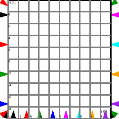

All canvas items have a context menu, which allow a variety of
operations to be applied to the canvas item. Common context menu items
are explained here:
- Help
- bring up context specific help for the item
- Description
- Attach an annotation to the item. This is only
visible by selecting the description item from the context menu,
although whatever is set as the “Short Description” will also
appear as a tooltip whenever the mouse hovers over the item.
- Port values
- When running a simulation, you can drill down into
the actual values at the input and output ports of the variable or
operation, which is a useful aid for debugging models.
- Edit
- set or query various attributes of an item. This function
can also be accessed by double clicking on the item. (Plot widgets
behave slightly differently).
- Copy
- Creates a copy of an item, retaining the same attributes
of the original. This is very useful for creating copies of the same
variable to reduce the amount of overlapping wiring (aka “rats
nest") in a model.
- Flip
- actually rotates an object through . You can
specify aribtrary rotations of objects through the edit menu.
- Delete
- delete the object.
Item specific context menu items:
- variables, parameters and constants
-
- Local
- Make the variable's scope local to its
group
- Find definition
- Place a red circle on the variable that
defines its value.
- Select all instances
- Select all instances of this variable
- Rename all instance
- Do a global search and replace of this
variable name with a new name.
- Export as CSV
- Export the current variable's value as a CSV
file. Obviously only really useful when the variable contains a
tensor
- Add integral
- attach an integration operation, and convert the
variable into an integral type
- integrals
-
- Copy Var
- copy just the integration variable, not the
integration operation
- Toggle Var Binding
- Normally, integrals are tightly bound to
their variables. By toggling the binding, the integral icon can
then be moved independently of the variable it is bound to.
- Godley tables
-
- Open Godley Table
- opens a spreadsheet to allow financial
flows defining the Godley table to be entered or modified.
- Resize Godley Table
- allows the icon to be resized.
- Edit/Copy var
- allows individual stock and flow variables to
be copied or edited.
- Export to file
- export table contents as either CSV data, or
as a LaTeX table, for import into other software.
- Groups
-
- Zoom to Display
- Zoom the canvas sufficiently to see the
contents of the group.
- Resize
- Resize the group icon on the canvas.
- Save group as
- Save the group in it's own Minsky file.
- Flip contents
- Rotate each item within the group by
180

- Ungroup
- Ungroup the group, leaving it's contents as icons on
the canvas.
- contentBounds
- Draws a box on the canvas indicating the
smallest bounding box containing the group items.
- Plot Widgets
-
- Expand
- By double-clicking, or selecting “Expand” from the
context menu, a popup window is created of the plot, which can be
used examine the plotting in more detail.
- Resize
- Allows you to resize the plot icon on the canvas
- Options
- Customize the plot by adding a title, axes labels and
control the number of axis ticks and grid lines on the detailed
plot. You can also add a legend, which is populated from the names
of variables attached to the plot.